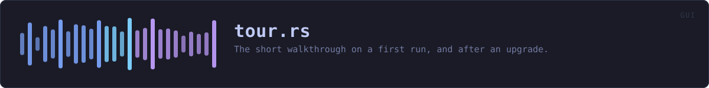

crates/veilvoice-gui/src/tour.rs
veilvoice-gui · 1321 lines · read the source here · or on GitHub
The short walkthrough on a first run, and after an upgrade.
What it is for
The window has nine tabs and nothing said what any of them were. Somebody opening this for the first time met a tab strip and had to guess, and two of the nine, Monitor and Lock, are not what their names suggest to a person who has not read the documentation.
So: a short stop on each, one sentence each, skippable at any point, and gone for good once seen. It is the paragraph a person would have read in a manual, offered at the moment they would have wanted it.
It sets the application up as well as describing it
Roadmap item 171. Describing the tabs was all it did, and the things worth deciding in the first minute of using VeilVoice -- a password on the window, what happens to recordings as they are written, whether this copy is installed -- were on tabs somebody had to go and find. A walkthrough that says "there is a Lock tab" and stops there has told somebody where the decision is rather than letting them take it.
The setup stops come first, before the descriptions of the tabs, because a passphrase is a decision and a tab is a paragraph: somebody who reads four sentences and closes the window should have been offered the decisions first. See Stage for the order and Already for what is left out.
It offers rather than acts, where acting is a commitment. A password is set here, because setting one is the whole point of asking and it can be changed on the Lock tab afterwards. Installing this copy is not: it writes to somewhere permanent, the Install tab says what it will write, and the most a walkthrough does is put somebody in front of it. That is what Outcome::Finished carries back.
It adapts rather than asking twice. A stop with nothing left to offer is dropped before the walkthrough starts rather than shown greyed out: a walkthrough whose steps are mostly already answered teaches people to press next without reading, which is how the one that mattered gets missed.
Why it comes back after an upgrade
Only as far as what is new. A tour that replays in full on every upgrade is a tour people learn to skip, and one that never comes back means something added in a later release is never introduced to anybody who was already a user.
What is stored is the list of stops that were shown, not a "seen" flag and not the version number. A flag cannot answer the question an upgrade asks, and the version can only answer it indirectly: comparing versions tells you that something changed, and the list tells you what, which is the thing being shown. It also means a release that adds nothing shows nobody anything, which is the common case and the right behaviour for it.
That list is also what carries the setup to the people who most need it. Somebody who has had VeilVoice installed for a year has every tab key stored and none of the setup ones, because the setup stops did not exist when they last toured. They are exactly the person who has never been offered an app lock, so the next launch offers them the setup, once, and not one word about the tabs they have been using all year.
Portable or installed
One of the stops says which one this copy is, in those words, because it is the question behind "where did my settings go" and "why is it not in my menu".
It is drawn over the window, not instead of it
Roadmap item 171. This used to replace the whole body of the window: update drew the card and returned, so the tabs it was describing were not on screen while it described them. A card saying what the Monitor tab is for, with no Monitor tab visible anywhere, is a paragraph from a manual rather than a tour of anything.
Now it is an egui::Modal: the window draws normally underneath, dimmed, and the card sits over it. The reader can see the tab strip the card is talking about. The backdrop takes the clicks, so nothing behind it can be pressed by accident, and the tab strip is drawn disabled as well so that it looks as unavailable as it is.
Escape closes it and a click on the shade does not. Those are usually the same gesture on a modal, and they should not be here: a modal asks a question and clicking away from it means "not now", where a tour is something somebody is stepping through, and a misjudged click halfway along should not throw away the half they have not seen. Escape is deliberate and the buttons are deliberate. A stray click is not.
A passphrase typed here does not outlive the card it was typed into. Every way out of a stop wipes the fields, including the ways that did not use them, because the field holds what somebody typed whether or not they pressed the button.
It can be asked for again
Settings, under Interface. The stored list decides whether the walkthrough offers itself; it has nothing to say about whether somebody may ask for it, and before this there was no way to ask. Somebody who skipped it on the day they installed VeilVoice had no route back to it at all, which made the skip button a permanent decision taken in the first thirty seconds.
A person asking gets every stop that applies, including the ones they have seen, because "show me that again" is not a question about what is new.
WHAT THIS FILE CONTAINS
1321 lines defining 22 functions (10 public), 5 types and 3 constants. Everything below is read out of the source, so it cannot disagree with the code.
The types it owns.
enum Stageline 214 · One stop on the walkthrough.struct Alreadyline 299 · What is already true, so the tour can leave out what it would only repeat.struct Tourline 329 · Where the tour is up to.enum Outcomeline 672 · What the window should do once the tour is out of the way.enum Pressline 873 · What a frame of the card asked for.
What happens when it runs. These are the ways in: public, and nothing else in this file calls them, so they are what an outside caller reaches first.
Stage::keyline 239 · The name this stop is remembered by.all_keysline 354 · Every stop's name.
reachesstageskeys_settledline 365 · The stops a finished tour has settled, for storing.
reachesstagesTour::start_new_onlyline 398 · Start it showing only the stops that are not in known.
reachesstagesTour::runningline 415 · Whether the tour is on screen.Tour::restartline 448 · Start it again from the beginning, because somebody asked.
reachesstart,stagesTour::overlayline 463 · Draw the current stop over the window.
reachesbody,finished,stop,wipe,app_lock,at_rest,decoy,heading,install,settings_headings,secret
WHAT CALLS WHAT
The functions this file defines, and the calls between them. An edge means the callee's name appears, called, inside the caller's body. This is a syntactic reading, not a type-resolved one.
The same graph as Mermaid source
%%{init: {"theme":"base","themeVariables":{"background":"#1a1b26","primaryColor":"#1f2335","primaryTextColor":"#c0caf5","primaryBorderColor":"#7aa2f7","secondaryColor":"#16161e","tertiaryColor":"#16161e","lineColor":"#737aa2","textColor":"#c0caf5","mainBkg":"#1f2335","nodeBorder":"#7aa2f7","clusterBkg":"#16161e","clusterBorder":"#2f3549","fontFamily":"ui-monospace, SFMono-Regular, Consolas, monospace","fontSize":"14px"}}}%%
flowchart TD
n_key(["Stage::key<br/>line 239"])
n_settled["Stage::settled<br/>line 255"]
n_applies["Stage::applies<br/>line 276"]
n_stages["stages<br/>line 315"]
n_all_keys(["all_keys<br/>line 354"])
n_keys_settled(["keys_settled<br/>line 365"])
n_start["Tour::start<br/>line 375"]
n_start_new_only(["Tour::start_new_only<br/>line 398"])
n_running(["Tour::running<br/>line 415"])
n_stop["Tour::stop<br/>line 420"]
n_wipe["Tour::wipe<br/>line 432"]
n_restart(["Tour::restart<br/>line 448"])
n_overlay(["Tour::overlay<br/>line 463"])
n_body["Tour::body<br/>line 576"]
n_app_lock["Tour::app_lock<br/>line 606"]
n_finished["Outcome::finished<br/>line 689"]
n_at_rest["at_rest<br/>line 700"]
n_decoy["decoy<br/>line 750"]
n_install["install<br/>line 779"]
n_settings_headings["settings_headings<br/>line 833"]
n_heading["heading<br/>line 849"]
n_secret["secret<br/>line 855"]
n_all_keys --> n_stages
n_app_lock --> n_heading
n_app_lock --> n_secret
n_at_rest --> n_heading
n_body --> n_app_lock
n_body --> n_at_rest
n_body --> n_decoy
n_body --> n_heading
n_body --> n_install
n_body --> n_settings_headings
n_decoy --> n_heading
n_install --> n_heading
n_keys_settled --> n_stages
n_overlay --> n_body
n_overlay --> n_finished
n_overlay --> n_stop
n_overlay --> n_wipe
n_restart --> n_start
n_settings_headings --> n_heading
n_settled --> n_applies
n_start --> n_stages
n_start_new_only --> n_stages
n_stop --> n_wipe
click n_key href "https://github.com/tilas01/veilvoice/blob/main/crates/veilvoice-gui/src/tour.rs#L239" "open the source"
click n_settled href "https://github.com/tilas01/veilvoice/blob/main/crates/veilvoice-gui/src/tour.rs#L255" "open the source"
click n_applies href "https://github.com/tilas01/veilvoice/blob/main/crates/veilvoice-gui/src/tour.rs#L276" "open the source"
click n_stages href "https://github.com/tilas01/veilvoice/blob/main/crates/veilvoice-gui/src/tour.rs#L315" "open the source"
click n_all_keys href "https://github.com/tilas01/veilvoice/blob/main/crates/veilvoice-gui/src/tour.rs#L354" "open the source"
click n_keys_settled href "https://github.com/tilas01/veilvoice/blob/main/crates/veilvoice-gui/src/tour.rs#L365" "open the source"
click n_start href "https://github.com/tilas01/veilvoice/blob/main/crates/veilvoice-gui/src/tour.rs#L375" "open the source"
click n_start_new_only href "https://github.com/tilas01/veilvoice/blob/main/crates/veilvoice-gui/src/tour.rs#L398" "open the source"
click n_running href "https://github.com/tilas01/veilvoice/blob/main/crates/veilvoice-gui/src/tour.rs#L415" "open the source"
click n_stop href "https://github.com/tilas01/veilvoice/blob/main/crates/veilvoice-gui/src/tour.rs#L420" "open the source"
click n_wipe href "https://github.com/tilas01/veilvoice/blob/main/crates/veilvoice-gui/src/tour.rs#L432" "open the source"
click n_restart href "https://github.com/tilas01/veilvoice/blob/main/crates/veilvoice-gui/src/tour.rs#L448" "open the source"
click n_overlay href "https://github.com/tilas01/veilvoice/blob/main/crates/veilvoice-gui/src/tour.rs#L463" "open the source"
click n_body href "https://github.com/tilas01/veilvoice/blob/main/crates/veilvoice-gui/src/tour.rs#L576" "open the source"
click n_app_lock href "https://github.com/tilas01/veilvoice/blob/main/crates/veilvoice-gui/src/tour.rs#L606" "open the source"
click n_finished href "https://github.com/tilas01/veilvoice/blob/main/crates/veilvoice-gui/src/tour.rs#L689" "open the source"
click n_at_rest href "https://github.com/tilas01/veilvoice/blob/main/crates/veilvoice-gui/src/tour.rs#L700" "open the source"
click n_decoy href "https://github.com/tilas01/veilvoice/blob/main/crates/veilvoice-gui/src/tour.rs#L750" "open the source"
click n_install href "https://github.com/tilas01/veilvoice/blob/main/crates/veilvoice-gui/src/tour.rs#L779" "open the source"
click n_settings_headings href "https://github.com/tilas01/veilvoice/blob/main/crates/veilvoice-gui/src/tour.rs#L833" "open the source"
click n_heading href "https://github.com/tilas01/veilvoice/blob/main/crates/veilvoice-gui/src/tour.rs#L849" "open the source"
click n_secret href "https://github.com/tilas01/veilvoice/blob/main/crates/veilvoice-gui/src/tour.rs#L855" "open the source"
classDef entry fill:#1f2335,stroke:#7aa2f7,color:#c0caf5
class n_key,n_all_keys,n_keys_settled,n_start_new_only,n_running,n_restart,n_overlay entry
classDef api fill:#1f2335,stroke:#7dcfff,color:#c0caf5
class n_stages,n_start,n_stop api
classDef helper fill:#1f2335,stroke:#bb9af7,color:#c0caf5
class n_settled,n_applies,n_wipe,n_body,n_app_lock,n_finished,n_at_rest,n_decoy,n_install,n_settings_headings,n_heading,n_secret helperThis site loads no third-party script, so it cannot run Mermaid; the diagram above is the same nodes and edges drawn by the generator instead. GitHub renders the source below directly.
ITEMS
| Item | Line | Documentation |
|---|---|---|
CARD_WIDTH const | 115 | How wide the card is allowed to get. |
CARD_HEIGHT_SHARE const | 125 | How much of the window's height the card may occupy before its text scrolls. |
CARDS pub const | 132 | One card: the tab it is about, and what that tab is for. |
Stage pub enum | 214 | One stop on the walkthrough. |
Stage::key pub fn | 239 | The name this stop is remembered by. |
Stage::settled fn | 255 | Whether a finished tour leaves this stop with nothing further to say. |
Stage::applies fn | 276 | Whether this stop has anything to say, given what is already set up. |
Already pub struct | 299 | What is already true, so the tour can leave out what it would only repeat. |
stages pub fn | 315 | Every stop, in the order a reader meets them. |
Tour pub struct | 329 | Where the tour is up to. |
all_keys pub fn | 354 | Every stop's name. |
keys_settled pub fn | 365 | The stops a finished tour has settled, for storing. |
Tour::start pub fn | 375 | Start the tour from the beginning, showing every stop that applies. |
Tour::start_new_only pub fn | 398 | Start it showing only the stops that are not in known. |
Tour::running pub fn | 415 | Whether the tour is on screen. |
Tour::stop pub fn | 420 | Stop it, and wipe anything typed into it. |
Tour::wipe fn | 432 | Clear the typed passphrase fields. |
Tour::restart pub fn | 448 | Start it again from the beginning, because somebody asked. |
Tour::overlay pub fn | 463 | Draw the current stop over the window. |
Tour::body fn | 576 | What one stop says, and what it offers. |
Tour::app_lock fn | 606 | The app lock, offered to somebody who has not set one. |
Outcome pub enum | 672 | What the window should do once the tour is out of the way. |
Outcome::finished fn | 689 | Finished, with nowhere in particular to go. |
at_rest fn | 700 | At-rest encryption: on, and what that means. |
decoy fn | 750 | The decoy passphrase: what it is, and what it is not. |
install fn | 779 | Installed or portable, and the offer that follows from it. |
settings_headings fn | 833 | Every heading in Settings, and what it covers. |
heading fn | 849 | A stop's title. |
secret fn | 855 | A password field. |
Press enum | 873 | What a frame of the card asked for. |